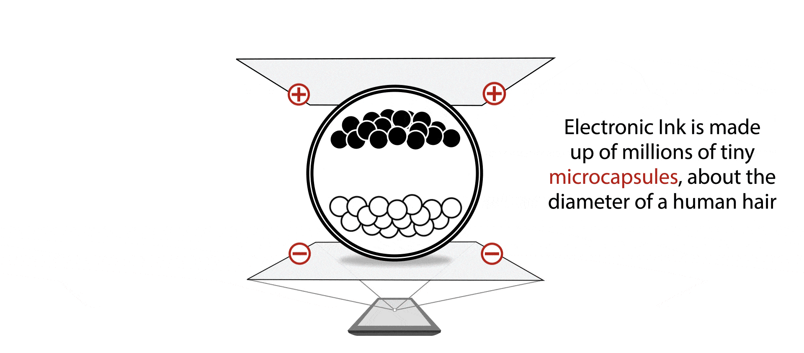

Electronic ink and its development
E-paper is a broad display category. E Ink is a prominent developer of electrophoretic displays. MIT Media Lab traces its microencapsulated electronic-ink work to 1997, before e-readers brought the technology to a wider audience. More recent developments extend the early monochrome approach to color output.
How an electrophoretic display works
An electric field moves charged pigment particles within a fluid. Bringing different particles toward the viewing surface changes the visible color. In a common two-particle system, black and white particles create the image. The surface reflects ambient light rather than using an LCD-style backlight. Some devices add front lighting for use in dim surroundings.

Strengths, limits and applications
Bistability allows the display to retain an image after power is removed. Updating the image requires energy, and the rest of a device can still consume power. E-paper is useful for reading, electronic shelf labels and signs that change occasionally. Refresh modes and color systems involve trade-offs, so fast video is generally a better fit for other display technologies.